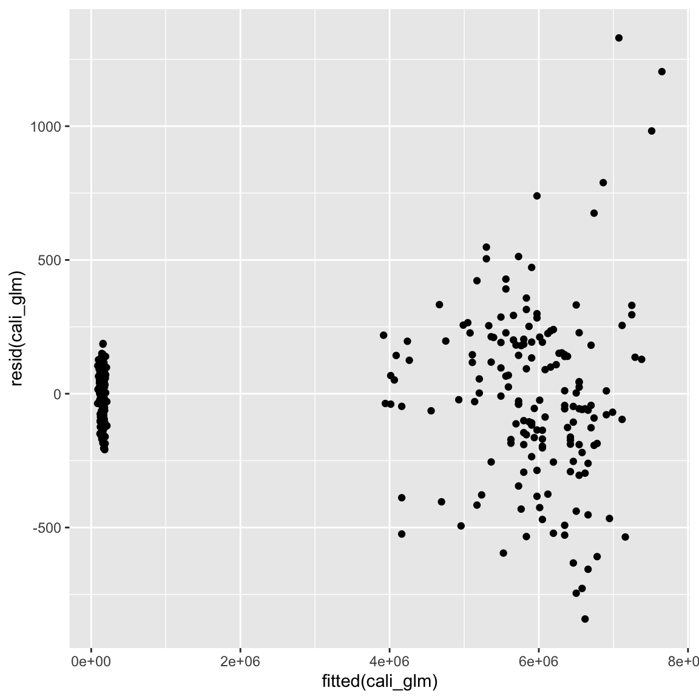

Robust Statistics
|
Statistics with R Basel R Bootcamp |

|

from self.com
Overview
In this practical you’ll explore issues surrounding the topic of robust statistics using a variety of packages (see Functions) tab. You’ll will explore sales of avocados across various locations in the US from 2015 to 2018.
By the end of this practical you will know how to:
- Evaluate regression assumptions.
- Run off-the-shelf non-parametric tests.
- Run bootstrap analyses.
Tasks
A - Setup
- Open your
BaselRBootcampR project. It should already have the folders1_Dataand2_Code. Make sure that the data files listed in theDatasetssection above are in your1_Datafolder
# Done!- Open a new R script. At the top of the script, using comments, write your name and the date. Save it as a new file called
robuststats_practical.Rin the2_Codefolder.
# Done!- Using
library()load thetidyversepackage (if you don’t have it, you’ll need to install it withinstall.packages())!
# Load packages necessary for this script
library(tidyverse)
library(lubridate)
Attaching package: 'lubridate'The following object is masked from 'package:base':
datelibrary(lme4)Loading required package: Matrix
Attaching package: 'Matrix'The following object is masked from 'package:tidyr':
expandlibrary(rsq)
library(moments)
library(boot)
library(quantreg)Loading required package: SparseM
Attaching package: 'SparseM'The following object is masked from 'package:base':
backsolvelibrary(Rfit)- Using the following template, load the
avocado.csv, andavocado_cali.csvdata sets into R and store them as a new objects calledavocado, andavocado_cali(Hint: Don’t type the path directly! Use the “tab” completion!).
# Load XXX.csv from the 1_Data folder
XX <- read_csv(file = "XX/XX")
XX <- read_csv(file = "XX/XX")# Load data sets from the 1_Data folder
avocado <- read_csv(file = "1_Data/avocado.csv")Parsed with column specification:
cols(
volume = col_double(),
volume_index = col_double(),
price_per_avocado = col_double(),
type = col_character(),
temperature = col_double(),
temperature_usa = col_double(),
humidity = col_double(),
humidity_usa = col_double(),
precipitation = col_double(),
precipitation_usa = col_double(),
year = col_double(),
season = col_character(),
date = col_date(format = ""),
region = col_character(),
longitude = col_double(),
latitude = col_double()
)avocado_cali <- read_csv(file = "1_Data/avocado_cali.csv")Parsed with column specification:
cols(
volume = col_double(),
volume_index = col_double(),
price_per_avocado = col_double(),
type = col_character(),
temperature = col_double(),
temperature_usa = col_double(),
humidity = col_double(),
humidity_usa = col_double(),
precipitation = col_double(),
precipitation_usa = col_double(),
year = col_double(),
season = col_character(),
date = col_date(format = ""),
region = col_character(),
longitude = col_double(),
latitude = col_double()
)- Take a look at the first few rows of the data sets by printing them to the console.
# Print XXX object
XXX# Print XXX object
avocado# A tibble: 17,573 x 16
volume volume_index price_per_avoca… type temperature temperature_usa
<dbl> <dbl> <dbl> <chr> <dbl> <dbl>
1 6.42e4 4.12 1.33 conv… 6.06 9.29
2 5.49e4 3.99 1.35 conv… -1.1 4.48
3 1.18e5 4.63 0.93 conv… 7.11 12.2
4 7.90e4 4.29 1.08 conv… 1.5 7.32
5 5.10e4 3.93 1.28 conv… -2 6.23
6 5.60e4 4.01 1.26 conv… 4.43 5.63
7 8.35e4 4.34 0.99 conv… 4.38 9.56
8 1.09e5 4.57 0.98 conv… 4.96 10.2
9 9.98e4 4.49 1.02 conv… 8.72 14.6
10 7.43e4 4.24 1.07 conv… 9.06 14.6
# … with 17,563 more rows, and 10 more variables: humidity <dbl>,
# humidity_usa <dbl>, precipitation <dbl>, precipitation_usa <dbl>,
# year <dbl>, season <chr>, date <date>, region <chr>, longitude <dbl>,
# latitude <dbl>avocado_cali# A tibble: 338 x 16
volume volume_index price_per_avoca… type temperature temperature_usa
<dbl> <dbl> <dbl> <chr> <dbl> <dbl>
1 5.04e6 8.59 0.9 conv… 15.5 9.29
2 4.70e6 8.50 0.94 conv… 2.61 4.48
3 5.26e6 8.64 0.87 conv… 14.4 12.2
4 5.78e6 8.76 0.78 conv… 5.93 7.32
5 4.58e6 8.46 0.91 conv… 9.76 6.23
6 4.80e6 8.53 0.92 conv… 6.23 5.63
7 5.76e6 8.75 0.83 conv… 8.33 9.56
8 5.15e6 8.61 0.98 conv… 10.5 10.2
9 5.83e6 8.77 0.95 conv… 14.7 14.6
10 4.59e6 8.47 1.12 conv… 14.9 14.6
# … with 328 more rows, and 10 more variables: humidity <dbl>,
# humidity_usa <dbl>, precipitation <dbl>, precipitation_usa <dbl>,
# year <dbl>, season <chr>, date <date>, region <chr>, longitude <dbl>,
# latitude <dbl>- Use the the
summary()function to print more details on the columns of the data sets.
# Show summary of XXX object
summary(XXX)# Show summary of XXX object
summary(avocado) volume volume_index price_per_avocado type
Min. : 85 Min. :0.16 Min. :0.44 Length:17573
1st Qu.: 10568 1st Qu.:2.77 1st Qu.:1.10 Class :character
Median : 100154 Median :4.49 Median :1.37 Mode :character
Mean : 545560 Mean :4.47 Mean :1.41
3rd Qu.: 399422 3rd Qu.:5.76 3rd Qu.:1.67
Max. :11274749 Max. :9.65 Max. :3.25
temperature temperature_usa humidity humidity_usa
Min. :-21.4 Min. :-3.99 Min. : 7.4 Min. :55.9
1st Qu.: 6.0 1st Qu.: 6.31 1st Qu.: 63.3 1st Qu.:66.0
Median : 14.9 Median :13.01 Median : 74.6 Median :70.8
Mean : 13.6 Mean :13.47 Mean : 72.0 Mean :71.8
3rd Qu.: 22.0 3rd Qu.:21.93 3rd Qu.: 84.0 3rd Qu.:77.1
Max. : 37.9 Max. :26.87 Max. :100.0 Max. :89.4
precipitation precipitation_usa year season
Min. : 0.0 Min. : 0.09 Min. :2015 Length:17573
1st Qu.: 0.0 1st Qu.: 1.19 1st Qu.:2015 Class :character
Median : 0.1 Median : 1.91 Median :2016 Mode :character
Mean : 2.8 Mean : 2.76 Mean :2016
3rd Qu.: 2.2 3rd Qu.: 3.73 3rd Qu.:2017
Max. :224.8 Max. :13.33 Max. :2018
date region longitude latitude
Min. :2015-01-04 Length:17573 Min. :-122.7 Min. :26.1
1st Qu.:2015-10-25 Class :character 1st Qu.:-105.0 1st Qu.:34.1
Median :2016-08-14 Mode :character Median : -85.8 Median :38.6
Mean :2016-08-13 Mean : -91.3 Mean :37.9
3rd Qu.:2017-06-04 3rd Qu.: -78.9 3rd Qu.:41.9
Max. :2018-03-25 Max. : -71.1 Max. :47.7 summary(avocado_cali) volume volume_index price_per_avocado type
Min. : 70004 Min. :4.19 Min. :0.67 Length:338
1st Qu.: 140345 1st Qu.:4.78 1st Qu.:1.08 Class :character
Median : 1698251 Median :6.67 Median :1.38 Mode :character
Mean : 3044324 Mean :6.79 Mean :1.40
3rd Qu.: 5871189 3rd Qu.:8.78 3rd Qu.:1.66
Max. :11213596 Max. :9.64 Max. :2.58
temperature temperature_usa humidity humidity_usa
Min. :-9.86 Min. :-3.99 Min. : 45.1 Min. :55.9
1st Qu.: 5.63 1st Qu.: 6.31 1st Qu.: 62.9 1st Qu.:66.0
Median :12.71 Median :13.01 Median : 73.2 Median :70.8
Mean :13.53 Mean :13.48 Mean : 73.5 Mean :71.8
3rd Qu.:22.81 3rd Qu.:21.93 3rd Qu.: 83.3 3rd Qu.:77.1
Max. :30.91 Max. :26.87 Max. :100.0 Max. :89.4
precipitation precipitation_usa year season
Min. : 0.0 Min. : 0.09 Min. :2015 Length:338
1st Qu.: 0.0 1st Qu.: 1.19 1st Qu.:2015 Class :character
Median : 0.1 Median : 1.91 Median :2016 Mode :character
Mean : 2.2 Mean : 2.76 Mean :2016
3rd Qu.: 1.2 3rd Qu.: 3.73 3rd Qu.:2017
Max. :42.8 Max. :13.33 Max. :2018
date region longitude latitude
Min. :2015-01-04 Length:338 Min. :-76.5 Min. :38.3
1st Qu.:2015-10-25 Class :character 1st Qu.:-76.5 1st Qu.:38.3
Median :2016-08-14 Mode :character Median :-76.5 Median :38.3
Mean :2016-08-14 Mean :-76.5 Mean :38.3
3rd Qu.:2017-06-04 3rd Qu.:-76.5 3rd Qu.:38.3
Max. :2018-03-25 Max. :-76.5 Max. :38.3 - Use the
View()function to view the entire data sets in new windows
# View data frame XXX
View(XXX)# View data frame XXX
View(avocado)
View(avocado_cali)
View(avocado_ny)B - Assumptions
- In this practical, you will be working with a data set containing information on the sales volume of avocados across various areas in the US and over the the last three years. Your initial goal is to predict, whether the sales
volumeis a function of theprice_per_avocado. Begin by running a simple regression on theavocado_calidata set usinglmand store the model asm1. See the template below.
Note: In this practical, we will be using the basic lm function, rather than the more general lm function.
# regress volume on average price
m1 <- lm(formula = YY ~ XX,
data = ZZ)# regress volume on average price
m1 <- lm(formula = volume ~ price_per_avocado,
data = avocado_cali)- Evaluate the model using
summary(). Is the average price a good predictor of volume?
# model summary
summary(XX)# model summary
summary(m1)
Call:
lm(formula = volume ~ price_per_avocado, data = avocado_cali)
Residuals:
Min 1Q Median 3Q Max
-4692333 -1486900 351468 1342770 4276676
Coefficients:
Estimate Std. Error t value Pr(>|t|)
(Intercept) 11577703 371529 31.2 <2e-16 ***
price_per_avocado -6115691 256440 -23.9 <2e-16 ***
---
Signif. codes: 0 '***' 0.001 '**' 0.01 '*' 0.05 '.' 0.1 ' ' 1
Residual standard error: 1840000 on 336 degrees of freedom
Multiple R-squared: 0.629, Adjusted R-squared: 0.628
F-statistic: 569 on 1 and 336 DF, p-value: <2e-16- According to test yes, the average price strongly predicts volume. However, this does not imply that the relationship between average price and volume is described well by the regression line. Create a simple plot of the average price (x-axis) and volume (y-axis) using the template below.
# plot model
plot(x = avocado_cali$XX,
y = avocado_cali$YY)
# Add regression line
abline(m1)# plot model
plot(x = avocado_cali$price_per_avocado,
y = avocado_cali$volume)
# Add regression line
abline(m1)- The plot revealed that the regression is actually not really a good summary of the data. Confirm this by plotting the residuals against the predicted values.
# Residual plot
plot(x = predict(XX),
y = residuals(XX))# Residual plot
plot(predict(m1), residuals(m1))
- The model fits the data badly including several serious violations of regression assumptions: Linearity, normality, and heteroscedascity do not seem to hold. One cause for these violations are missing variables. Add one other variable to the regression that contains information on the kind of avocado (see Data tab) and evaluate the model again.
# regress volume on average price and XX
m2 <- lm(formula = YY ~ XX1 + XX2,
data = ZZ)
plot(x = predict(m2),
y = residuals(m2))# regress volume on average price and XX
m2 <- lm(volume ~ price_per_avocado + type,
data = avocado_cali)
plot(predict(m2), residuals(m2))- Accounting for the different types of avocados has helped a great deal. The residual plot still does not look ideal. But at least the correlation between predicted values and residuals seems to have substantially decreased. Verify this by comparing the correlations.
# compare correlation of predicted values & residals
cor(x = predict(XX),
y = residuals(XX))
cor(x = predict(YY),
y = residuals(YY))# compare correlation of predicted values & residals
cor(predict(m1), residuals(m1))[1] 4.57e-17cor(predict(m2), residuals(m2))[1] -1.55e-16- The correlation actually has not come down, because the correlation for
m1was despite the visual appearance already zero. Nonetheless, we are moving in the right direction. One other problem for the relationship is the very skewed distribution ofvolume. Inspect this by plotting a simple histogram ofvolume.
# histogram of volume
hist(x = avocado_cali$XX)# histogram of volume
hist(x = avocado_cali$volume)- To deal with this problem one could engage in variable transformations, but it would be better to model the data using an appropriate probability distribution. In the case of counts this typically is a Poisson distribution. Fortunately, we don’t have to do either. There is another variable called
volume_indexthat is much better behaved. Verify this by also creating a histogram of this variable.
# histogram of volume_index
hist(x = avocado_cali$XX)# histogram of volume_index
hist(x = avocado_cali$volume_index)- The distribution of
volume_indexis also not ideal, but at least it exhibits much less skewness. Verify this by computing the skewness of both variables using theskewnessfunction from themomentspackage.
# skewness of volume and volume index
skewness(x = avocado_cali$XX)
skewness(x = avocado_cali$YY)# skewness of volume and volume index
skewness(x = avocado_cali$volume)[1] 0.249skewness(x = avocado_cali$volume_index)[1] -0.0029- Now that you confirmed that
volume_indexis probably the better variable to model, run a regression predictingvolume_indexwithprice_per_avocadoandtypeand call the modelm3.
# regress volume_index on average price and type
m3 <- lm(formula = YY ~ XX1 + XX2,
data = ZZ)# regress volume_index on average price and type
m3 <- lm(volume_index ~ price_per_avocado + type,
data = avocado_cali)- Now plot the residuals of
m3against the predicted values. What do you think have the residuals become more behaved?
# evaluate m3
plot(x = predict(m3),
y = residuals(m3))- The residual behavior is still not ideal. There seems to still some skewness differences between low and high predicted values, but now one would not expect anymore that those would substantially alter the results. So, go on and evaluate the model using
summary().
# evaluate m3
summary(m3)
Call:
lm(formula = volume_index ~ price_per_avocado + type, data = avocado_cali)
Residuals:
Min 1Q Median 3Q Max
-0.5125 -0.1401 0.0209 0.1463 0.6566
Coefficients:
Estimate Std. Error t value Pr(>|t|)
(Intercept) 9.3814 0.0500 187.7 <2e-16 ***
price_per_avocado -0.5493 0.0429 -12.8 <2e-16 ***
typeorganic -3.6459 0.0334 -109.0 <2e-16 ***
---
Signif. codes: 0 '***' 0.001 '**' 0.01 '*' 0.05 '.' 0.1 ' ' 1
Residual standard error: 0.206 on 335 degrees of freedom
Multiple R-squared: 0.989, Adjusted R-squared: 0.989
F-statistic: 1.58e+04 on 2 and 335 DF, p-value: <2e-16C - Variance inflation
- In the previous section, you have evaluated the effect of price on volume controlling for the type of avocado. This has shown you that price indeed seems to exert strong influence on volume. Some of this impact, however, could be due to other third variables. For instance, it might be possible that the price simply went up through general inflation, while at the same time avocados became more popular. Control for this and other factors by including in the regression of
volume_indexthe following variables in addition toprice_per_avocadoandtype,date,season,temperature,humidity,precipitation. Call the modelm4.
# new comprehensive model 4
m4 <- lm(formula = volume_index ~ price_per_avocado + type + date + season + temperature + humidity + precipitation,
data = avocado_cali)- Evaluate the model using
summary()and compare it to the summary ofm3. First, is the the effect of price still significant. Second, how have have the estimate changed and the standard error changed?
# evaluate m3 and m4
summary(m3)
Call:
lm(formula = volume_index ~ price_per_avocado + type, data = avocado_cali)
Residuals:
Min 1Q Median 3Q Max
-0.5125 -0.1401 0.0209 0.1463 0.6566
Coefficients:
Estimate Std. Error t value Pr(>|t|)
(Intercept) 9.3814 0.0500 187.7 <2e-16 ***
price_per_avocado -0.5493 0.0429 -12.8 <2e-16 ***
typeorganic -3.6459 0.0334 -109.0 <2e-16 ***
---
Signif. codes: 0 '***' 0.001 '**' 0.01 '*' 0.05 '.' 0.1 ' ' 1
Residual standard error: 0.206 on 335 degrees of freedom
Multiple R-squared: 0.989, Adjusted R-squared: 0.989
F-statistic: 1.58e+04 on 2 and 335 DF, p-value: <2e-16summary(m4)
Call:
lm(formula = volume_index ~ price_per_avocado + type + date +
season + temperature + humidity + precipitation, data = avocado_cali)
Residuals:
Min 1Q Median 3Q Max
-0.4198 -0.0968 0.0009 0.0834 0.6833
Coefficients:
Estimate Std. Error t value Pr(>|t|)
(Intercept) 2.74e+00 4.64e-01 5.91 8.7e-09 ***
price_per_avocado -7.73e-01 4.62e-02 -16.73 < 2e-16 ***
typeorganic -3.52e+00 3.14e-02 -112.00 < 2e-16 ***
date 4.03e-04 2.83e-05 14.25 < 2e-16 ***
seasonspring 1.50e-01 2.80e-02 5.37 1.5e-07 ***
seasonsummer 1.44e-01 3.07e-02 4.70 3.8e-06 ***
seasonwinter 5.59e-02 3.57e-02 1.57 0.1179
temperature 3.10e-03 1.53e-03 2.02 0.0441 *
humidity -1.56e-03 8.92e-04 -1.75 0.0814 .
precipitation 4.49e-03 1.71e-03 2.62 0.0091 **
---
Signif. codes: 0 '***' 0.001 '**' 0.01 '*' 0.05 '.' 0.1 ' ' 1
Residual standard error: 0.15 on 328 degrees of freedom
Multiple R-squared: 0.995, Adjusted R-squared: 0.994
F-statistic: 6.6e+03 on 9 and 328 DF, p-value: <2e-16- You will have observed that both the estimate and the standard error went slightly up. The former is a result of the fact that the other variables took account of some variance in the price that is not related to volume. The latter is, as you can verify in the formula on the variance inflation factor, a result of two adversarial factors: (1) a better fit of the model and (2) an increased variance inflation factor. Let’s inspect these two. First, evaluate the residual variance of
m3andm4using the template below.
# residaul variance of m3 and m4
var_res1 <- var(residuals(XX))
var_res2 <- var(residuals(YY))
var_res1
var_res2# resdiaul variance of m3 and m4
var_res1 <- var(residuals(m3))
var_res2 <- var(residuals(m4))
var_res1[1] 0.042var_res2[1] 0.022- You’ll see that that the residual variance decreased to about half. According to this the variance of the \(beta\) weight (i.e., the square of the standard error should have also halved). Given that it has not, suggests that the variance inflation factor has increased by at least the same amount. Find out! Run two regression predicting
price_per_avocado: First, by all other predictors inm3, i.e.,type, and call the modelm_price1. Second, by all other predictors inm4and call the modelm_price2.
# predicting price_per_avocado
m_price1 <- lm(formula = price_per_avocado ~ XX,
data = avocado_cali)
m_price2 <- lm(formula = price_per_avocado ~ XX + XX + ...,
data = avocado_cali)# resdiual variance of m3 and m4
m_price1 <- lm(formula = price_per_avocado ~ type,
data = avocado_cali)
m_price2 <- lm(formula = price_per_avocado ~ type + date + season + temperature + humidity + precipitation,
data = avocado_cali)- Next, calculate the \(R^2\) value for both models and the variance inflation factor using the template below.
# proportion explained variance
rsq1 <- rsq(XX)
rsq2 <- rsq(YY)
rsq1
rsq2
# variance inflation factors
vif1 <- 1 / (1 - rsq1)
vif2 <- 1 / (1 - rsq2)
vif1
vif2# proportion explained variance
rsq1 <- rsq(m_price1)
rsq2 <- rsq(m_price2)
rsq1[1] 0.553rsq2[1] 0.794# variance inflation factors
vif1 <- 1/(1-rsq1)
vif2 <- 1/(1-rsq2)
vif1[1] 2.24vif2[1] 4.86- So, while residual variance decreased from
.042to.022, the variance inflation factor increased from2.24to4.86. Using these values we can actually compute the standard errors ofprice_per_avocadoin modelm3andm4following the formula on the respective slide. See code below. Confirm that the calculated values correspond to the standard errors in the summary outputs form1andm2.
Note: R determines the standard errors using a correction for degrees of freedom in the calculation of the residual variance. One can account for this by recalculating the residual variance using \(\hat\sigma_e^2=\frac{\sum e^2}{n-df-1}\), with \(df=2\) for m3 and \(df=9\) for m4.
# needed formula elements
var_x <- var(avocado_cali$price_per_avocado)
n <- nrow(avocado_cali)
# without correction -----
# variance and standard error of price in m3
var_beta1 <- (var_res1 / (var_x * (n-1))) * vif1
sqrt(var_beta1)[1] 0.0428# variance and standard error of price in m4
var_beta2 <- (var_res2 / (var_x * (n-1))) * vif2
sqrt(var_beta2)[1] 0.0456# with correction -----
# variance and standard error of price in m3 with correction
var_c_res1 <- sum(residuals(m3)**2) / (n - 2 - 1)
var_beta1 <- (var_c_res1 / (var_x * (n-1))) * vif1
sqrt(var_beta1)[1] 0.0429# variance and standard error of price in m4 with correction
var_c_res2 <- sum(residuals(m4)**2) / (n - 9 - 1)
var_beta2 <- (var_c_res2 / (var_x * (n-1))) * vif2
sqrt(var_beta2)[1] 0.0462- The above illustrates that including variables regressors in the regression is a double-edged sword. They improve the overall prediction and may uncover more pure relationships, but they will also increase our uncertainty over the true values of the regression weights by increasing the respective standard errors. If you like, see if you can find other combination of predictors that increase or decrease the standard error of the weight for price.
C - Polynomial effects
- So far we have assumed that all relationships are completely linear. However, it seems plausible the effect of price could, for instance, be a quadratic one or even of a higher polynomial. Create a regression predicting
volume_indexbytype,price_per_avocado, and the quadratic effect ofprice_per_avocado. The latter can be included using the functionI(). See template below.
# linear and quadratic effect of price
m5 <- lm(formula = YY ~ YY + XX + I(XX ^ 2),
data = avocado_cali)# linear and quadratic effect of price
m5 <- lm(formula = volume_index ~ type + price_per_avocado + I(price_per_avocado^2),
data = avocado_cali)- Eva lute the model (
m5) usingsummary(). Is the quadratic effect significant?
# linear and quadratic effect of price
summary(m5)
Call:
lm(formula = volume_index ~ type + price_per_avocado + I(price_per_avocado^2),
data = avocado_cali)
Residuals:
Min 1Q Median 3Q Max
-0.4958 -0.1337 0.0064 0.1417 0.5849
Coefficients:
Estimate Std. Error t value Pr(>|t|)
(Intercept) 9.8686 0.1506 65.51 < 2e-16 ***
typeorganic -3.6093 0.0346 -104.24 < 2e-16 ***
price_per_avocado -1.2474 0.2083 -5.99 5.5e-09 ***
I(price_per_avocado^2) 0.2232 0.0652 3.42 7e-04 ***
---
Signif. codes: 0 '***' 0.001 '**' 0.01 '*' 0.05 '.' 0.1 ' ' 1
Residual standard error: 0.202 on 334 degrees of freedom
Multiple R-squared: 0.99, Adjusted R-squared: 0.99
F-statistic: 1.09e+04 on 3 and 334 DF, p-value: <2e-16- Test whether the inclusion of the quadratic factor is warranted by testing
m5againstm3(the model without the quadratic effect) usinganova(). Note:anova()performs a deviance test between two models, not an analysis of variance in the classical sense.
# evaluate merit of quadratic effect
anova(m3, m5)# evaluate merit of quadratic effect
summary(m5)
Call:
lm(formula = volume_index ~ type + price_per_avocado + I(price_per_avocado^2),
data = avocado_cali)
Residuals:
Min 1Q Median 3Q Max
-0.4958 -0.1337 0.0064 0.1417 0.5849
Coefficients:
Estimate Std. Error t value Pr(>|t|)
(Intercept) 9.8686 0.1506 65.51 < 2e-16 ***
typeorganic -3.6093 0.0346 -104.24 < 2e-16 ***
price_per_avocado -1.2474 0.2083 -5.99 5.5e-09 ***
I(price_per_avocado^2) 0.2232 0.0652 3.42 7e-04 ***
---
Signif. codes: 0 '***' 0.001 '**' 0.01 '*' 0.05 '.' 0.1 ' ' 1
Residual standard error: 0.202 on 334 degrees of freedom
Multiple R-squared: 0.99, Adjusted R-squared: 0.99
F-statistic: 1.09e+04 on 3 and 334 DF, p-value: <2e-16- Yes, the quadratic effect improves the prediction of volume significantly. However, this came again with a substantial downside. You will see that the standard error of the linear effect of price went up dramatically. This is because
price_per_avocadoandprice_per_avocado^2are highly correlated. To prevent this, the quadratic terms are typically centered, as implemented in the template below. Run the regression and compare the results tom5.
# linear and quadratic effect of price
m6 <- lm(formula = YY ~ YY + XX + I((XX - mean(XX)) ^2),
data = avocado_cali)# linear and quadratic effect of price
m6 <- lm(volume_index ~ type + price_per_avocado + I((price_per_avocado - mean(price_per_avocado))^2),
data = avocado_cali)- You’ll see the standard error of the linear effect went back to about where it was in
m3orm4. Try out if you can further improve the prediction of volume by including a cubic effect, i.e.,XX^3.
D - Non-parametric tests
- Let’s now look at the development of avocado consumption over time. Use the following code to create data sets containing the Cali’ avocado consumption in 2016 and 2017.
# Cali avocado volume 2016 & 2017
avocado_cali_2016 <- avocado_cali %>%
filter(year == 2016)
avocado_cali_2017 <- avocado_cali %>%
filter(year == 2017,
week(date) %in% week(avocado_cali_2016$date))- Now test, whether the consumption has risen from 2016 to 2017 using a paired t-test, i.e.,
t.test(X, Y, paired = TRUE). Try this out for bothvolumeandvolume_index.
# compare Cali avocado volume 2016 & 2017
t.test(x = avocado_cali_2016$XX,
y = avocado_cali_2017$XX,
paired = TRUE)# compare Cali avocado volume 2016 & 2017
t.test(avocado_cali_2016$volume,
avocado_cali_2017$volume, paired = TRUE)
Paired t-test
data: avocado_cali_2016$volume and avocado_cali_2017$volume
t = 2, df = 100, p-value = 0.05
alternative hypothesis: true difference in means is not equal to 0
95 percent confidence interval:
-3290 307840
sample estimates:
mean of the differences
152275 # compare Cali avocado volume_index 2016 & 2017
t.test(avocado_cali_2016$volume_index,
avocado_cali_2017$volume_index, paired = TRUE)
Paired t-test
data: avocado_cali_2016$volume_index and avocado_cali_2017$volume_index
t = 2, df = 100, p-value = 0.03
alternative hypothesis: true difference in means is not equal to 0
95 percent confidence interval:
0.0056 0.0965
sample estimates:
mean of the differences
0.051 - For
volume_indexthe result turned out significant, 2017 indeed saw higher avocado consumption than 2016. However, forvolumethe result did not quite reach significance. This likely has to do with the fact thatvolumeis extremely skewed. To confirm the result, run the same tests using a pared Wilcoxon test, i.e.,wilcox.test(XX, YY, paired = TRUE), which should not be affected by the skewness.
# compare Cali avocado volume 2016 & 2017
wilcox.test(x = avocado_cali_2016$XX,
y = avocado_cali_2017$XX,
paired = TRUE)
# compare Cali avocado volume_index 2016 & 2017
wilcox.test(x = avocado_cali_2016$YY,
y = avocado_cali_2017$YY,
paired = TRUE)# compare Cali avocado volume 2016 & 2017
wilcox.test(avocado_cali_2016$volume,
avocado_cali_2017$volume, paired = TRUE)
Wilcoxon signed rank test with continuity correction
data: avocado_cali_2016$volume and avocado_cali_2017$volume
V = 3000, p-value = 0.01
alternative hypothesis: true location shift is not equal to 0# compare Cali avocado volume_index 2016 & 2017
wilcox.test(avocado_cali_2016$volume_index,
avocado_cali_2017$volume_index, paired = TRUE)
Wilcoxon signed rank test with continuity correction
data: avocado_cali_2016$volume_index and avocado_cali_2017$volume_index
V = 3000, p-value = 0.02
alternative hypothesis: true location shift is not equal to 0- In fact, the Wilcoxon test shows significant results for both measures, suggesting that there indeed is a robust difference. Another, even more robust way of testing this is the sign test. Test this using the template below
# sign test preparations
signs <- avocado_cali_2017$XX > avocado_cali_2016$XX
n_plus <- sum(signs)
n <- length(signs)
# sign test: p of receiving a larger n_plus than observed
pbinom(q = n_plus, size = n, prob = .5)# sign test preparations
signs = avocado_cali_2017$volume > avocado_cali_2016$volume
n_plus = sum(signs)
n = length(signs)
# sign test: p of receiving a larger n_plus than observed
pbinom(n_plus, size = n, prob = .5)[1] 0.0475# sign test preparations
signs = avocado_cali_2017$volume_index > avocado_cali_2016$volume_index
n_plus = sum(signs)
n = length(signs)
# sign test: p of receiving a larger n_plus than observed
pbinom(n_plus, size = n, prob = .5)[1] 0.0475- The sign test confirms the results. Now, go explore and see whether you can find additional differences between the avocado years of 2016 and 2017 in California.
E - Robust regression
- Remember that the residual distribution of our regression of
volume_indexonprice_per_avocadoandtypewas less than ideal? Take a look again by running the code below.
# regress volume_index on average price and type
m3 <- lm(formula = volume_index ~ price_per_avocado + type,
data = avocado_cali)
plot(x = predict(m3),
y = residuals(m3))
- The somewhat different residual distributions for high and low predictions suggest that we should take a look at robust regression analyses. Run similar regression models using the
rqfunction from thequantregpackage and therfitfunction from theRfitpackage using the template below.
# quantile regression
m3_q <- rq(formula = YY ~ XX + XX,
data = ZZ)
# rank-based regression
m3_rb <- rfit(formula = YY ~ XX + XX,
data = ZZ)# quantile regression
m3_q <- rq(formula = volume_index ~ price_per_avocado + type,
data = avocado_cali)
# rank-based regression
m3_rb <- rfit(formula = volume_index ~ price_per_avocado + type,
data = avocado_cali)- Compare the results of the original
m3model to the two robust regression models usingsummary()on each model. Are the coefficients much different from each another?
# regular regression
summary(m3)
Call:
lm(formula = volume_index ~ price_per_avocado + type, data = avocado_cali)
Residuals:
Min 1Q Median 3Q Max
-0.5125 -0.1401 0.0209 0.1463 0.6566
Coefficients:
Estimate Std. Error t value Pr(>|t|)
(Intercept) 9.3814 0.0500 187.7 <2e-16 ***
price_per_avocado -0.5493 0.0429 -12.8 <2e-16 ***
typeorganic -3.6459 0.0334 -109.0 <2e-16 ***
---
Signif. codes: 0 '***' 0.001 '**' 0.01 '*' 0.05 '.' 0.1 ' ' 1
Residual standard error: 0.206 on 335 degrees of freedom
Multiple R-squared: 0.989, Adjusted R-squared: 0.989
F-statistic: 1.58e+04 on 2 and 335 DF, p-value: <2e-16# quantile regression
summary(m3_q)
Call: rq(formula = volume_index ~ price_per_avocado + type, data = avocado_cali)
tau: [1] 0.5
Coefficients:
coefficients lower bd upper bd
(Intercept) 9.433 9.320 9.478
price_per_avocado -0.590 -0.672 -0.488
typeorganic -3.572 -3.704 -3.501 # rank-based regression
summary(m3_rb)Call:
rfit.default(formula = volume_index ~ price_per_avocado + type,
data = avocado_cali)
Coefficients:
Estimate Std. Error t.value p.value
(Intercept) 9.3919 0.0509 184.5 <2e-16 ***
price_per_avocado -0.5487 0.0428 -12.8 <2e-16 ***
typeorganic -3.6200 0.0334 -108.5 <2e-16 ***
---
Signif. codes: 0 '***' 0.001 '**' 0.01 '*' 0.05 '.' 0.1 ' ' 1
Overall Wald Test: 31306 p-value: 0 - The solutions of the three model classes were quite similar, right? Now, try the same predicting
volumeinstead ofvolume_index. Fit regressions using regular regression and the two robust approaches and compare the parameters.
# regular regression
m3_2 <- lm(formula = volume ~ price_per_avocado + type,
data = avocado_cali)
summary(m3_2)
Call:
lm(formula = volume ~ price_per_avocado + type, data = avocado_cali)
Residuals:
Min 1Q Median 3Q Max
-2029523 -338620 -65747 347099 4692280
Coefficients:
Estimate Std. Error t value Pr(>|t|)
(Intercept) 7418161 181045 40.97 < 2e-16 ***
price_per_avocado -1338574 155354 -8.62 2.8e-16 ***
typeorganic -5012181 121165 -41.37 < 2e-16 ***
---
Signif. codes: 0 '***' 0.001 '**' 0.01 '*' 0.05 '.' 0.1 ' ' 1
Residual standard error: 745000 on 335 degrees of freedom
Multiple R-squared: 0.939, Adjusted R-squared: 0.939
F-statistic: 2.59e+03 on 2 and 335 DF, p-value: <2e-16# quantile regression
m3_q_2 <- rq(formula = volume ~ price_per_avocado + type,
data = avocado_cali)
summary(m3_q_2)
Call: rq(formula = volume ~ price_per_avocado + type, data = avocado_cali)
tau: [1] 0.5
Coefficients:
coefficients lower bd upper bd
(Intercept) 6.06e+06 5.68e+06 1.80e+308
price_per_avocado -1.54e+05 -3.16e+05 -4.18e+04
typeorganic -5.64e+06 -6.39e+06 -5.41e+06# rank-based regression
m3_rb_2 <- rfit(formula = volume ~ price_per_avocado + type,
data = avocado_cali)
summary(m3_rb_2)Call:
rfit.default(formula = volume ~ price_per_avocado + type, data = avocado_cali)
Coefficients:
Estimate Std. Error t.value p.value
(Intercept) 6364041 79963 79.59 < 2e-16 ***
price_per_avocado -455914 68632 -6.64 1.2e-10 ***
typeorganic -5453701 53528 -101.88 < 2e-16 ***
---
Signif. codes: 0 '***' 0.001 '**' 0.01 '*' 0.05 '.' 0.1 ' ' 1
Overall Wald Test: 25548 p-value: 0 - The numbers aren’t so easy to compare, but you will be able to confirm that the regular regression coefficients are far of the ones of the other two methods, especially for
price_per_avocado. As in most circumstances, the difference is largest between therqandlmresults, withrfitbeing somewhere in the middle, but closer torq. Now, as usual, go explore.
X - Advanced: Bootstrap
Bootstrapping is an amazingly powerful tool to make inferences about the sampling distribution of any statistic you can come up with. Let’s try to use it to come up with standard errors for our favorite regression model: volume_index ~ price_per_avocado + type.
- To use bootstrap, one needs to define a function that calculates the statistics for each of the different bootstrap samples provided to it. See the code below. Notice that the
dataargument has not been assigned our data setavocado_calibut rather carries the genericdata, which will be provided to the function by thebootfunction. Run the function.
# bootstrap function for linear model
boot_lm <- function(data, indices){
data <- data[indices,] # select obs. in bootstrap sample
m <- lm(volume_index ~ price_per_avocado + type,
data = data)
coefficients(m)
}- The next step is to run the bootstrap mechanism using the
bootfunction from thebootpackage to create the bootstrap results. Here we are now providingavocado_calialong with the function defined above and the number of repetitionsR. Run the bootstrap.
# bootstrap sampling results
B <- boot(data = avocado_cali,
statistic = boot_lm,
R = 100)- Now you can evaluate the results. Print the
Bobject. The output will be slightly different than usual. The columnoriginalcontains the results of the regression model for the full data (i.e.,m3). The columnbiascontains the differences between the average simulated parameters and the original parameters. If these are large, then this may, among other things, mean that you need to run a larger number of bootstrap samples. Finally, the columnstd. errorcontains the standard error across the bootstrap sampling results.
# print bootstrap results
B
ORDINARY NONPARAMETRIC BOOTSTRAP
Call:
boot(data = avocado_cali, statistic = boot_lm, R = 100)
Bootstrap Statistics :
original bias std. error
t1* 9.381 -0.00513 0.0538
t2* -0.549 0.00362 0.0454
t3* -3.646 -0.00153 0.0359- Finally, compare the standard errors of the
m3or the other, robust regression models, to those of the bootstrap.
# print bootstrap results
summary(m3)
Call:
lm(formula = volume_index ~ price_per_avocado + type, data = avocado_cali)
Residuals:
Min 1Q Median 3Q Max
-0.5125 -0.1401 0.0209 0.1463 0.6566
Coefficients:
Estimate Std. Error t value Pr(>|t|)
(Intercept) 9.3814 0.0500 187.7 <2e-16 ***
price_per_avocado -0.5493 0.0429 -12.8 <2e-16 ***
typeorganic -3.6459 0.0334 -109.0 <2e-16 ***
---
Signif. codes: 0 '***' 0.001 '**' 0.01 '*' 0.05 '.' 0.1 ' ' 1
Residual standard error: 0.206 on 335 degrees of freedom
Multiple R-squared: 0.989, Adjusted R-squared: 0.989
F-statistic: 1.58e+04 on 2 and 335 DF, p-value: <2e-16- Go explore. Can you figure out how to bootstrap the difference between the volumes of
avocado_cali_2016andavocado_cali_2017?
Y - Advanced: Assumptions pt. 2
In this section you can full demonstrate your statistics Jedi-knight skills by analyzing the full avocado data set. Given that the avocado data set contains data from different regions the full data needs to modeled as a mixed model. Your goal is to specify a model that produces a relatively well-behaved looking residual plot, by including any necessary variables from the data set as fixed or random effects. See template below.
# model
mm <- lmer(formula = volume_index ~ XX + (1 | region),
data = avocado)
# residual plot
plot(x = predict(mm), y = residuals(m,))Examples
library(tidyverse)
# descriptive stats ----------------
library(moments)
var(hwy) # variance
skewness(hwy) # skewness
# simple regression ----------------
# model
m <- lm(formula = hwy ~ displ,
data = mpg)
# evaluate model
summary(m) # summary results
predict(m) # predicted/fitted values
residuals(m) # residual errors
rsq(m) # r-square
1 / (1-rsq(m)) # variance inflation factor
# residual plot
plot(predict(m), residuals(m))
# model comparison ----------------
# model
m1 <- lm(formula = hwy ~ displ,
data = mpg)
# model + quadratic effect
m2 <- lm(formula = hwy ~ I(displ^2),
data = mpg)
# anova
anova(m1, m2)
# non-parametric tests ----------------
# split data (not strictly necessary)
mpg_suv <- mpg %>% filter(class == 'suv')
mpg_compact <- mpg %>% filter(class == 'compact')
# wilcoxon
wilcoxon.test(mpg_suv$hwy, mpg_compact$hwy)
# robust regression ----------------
library(quantreg)
library(Rfit)
# quantile regression
m_q <- rq(hwy ~ displ, data = mpg)
# rank-based regression
m_rb <- rfit(hwy ~ displ, data = mpg)Datasets
| File | Rows | Columns |
|---|---|---|
| avocado.csv | 17573 | 16 |
| avocado_cali.csv | 338 | 16 |
This data was downloaded from the Hass Avocado Board website for the duration of April 2015 and May 2018. The data contain weekly (reported on Sundays) retail scan data for National retail volume (units) and price. Retail scan data comes directly from retailers’ cash registers based on actual retail sales of Hass avocados. The Average Price (of avocados) in the table reflects a per unit (per avocado) cost. Other varieties of avocados (e.g. greenskins) are not included in this table.
The data set avocado.csv contains the data for all 52 regions. The smaller data set avocado_cali.csv contains the data for only California.
Variable description
| Name | Description |
|---|---|
volume |
The total number of sold avocados that week. |
volume_index |
A sales index scaling the sales number to the range of 0 to 10. |
price_per_avocado |
The average price of a single avocado. |
type |
The type of avocado: “conventional” or “organic”. |
temperature |
The regional temperature on the day of the data recording. |
temperature_usa |
The country-wide temperature on the day of the data recording. |
humidity |
The regional humidity on the day of the data recording. |
humidity_usa |
The country-wide humidity on the day of the data recording. |
precipitation |
The regional precipitation on the day of the data recording. |
precipitation_usa |
The country-wide precipitation on the day of the data recording. |
year |
The year of the data recording. |
season |
The season of the data recording. |
date |
The date of the data recording. |
region |
The region for which sales were recorded. |
longitude |
The longitude of the region center. |
latitude |
The latitude of the region center. |
Functions
Packages
| Package | Installation |
|---|---|
tidyverse |
install.packages("tidyverse") |
lubridate |
install.packages("lubridate") |
moments |
install.packages("moments") |
quantreg |
install.packages("quantreg") |
boot |
install.packages("boot") |
Rfit |
install.packages("Rfit") |
lme4 |
install.packages("lme4") |
rsq |
install.packages("rsq") |
Functions
| Function | Package | Description |
|---|---|---|
lm |
stats |
More basic version of glm() for regular regression models. |
summary, rsq |
base |
Print model summary / model R-squared |
predict, residuals |
stats |
Extract fitted values / residuals from model object. |
rq |
quantreg |
Conduct quantile regression. |
rfit |
Rfit |
Conduct rank-based regression. |
wilcox.test |
stats |
Wilcoxon test. |
pbinom |
stats |
Cumulative binomial distribution. Useful for sign-test. |
Resources
vignettes
Links to decent introductory / tutorial papers:
Regression assumptions, Robust regression, Rank-based regression with Rfit Bootstrap Variance inflation